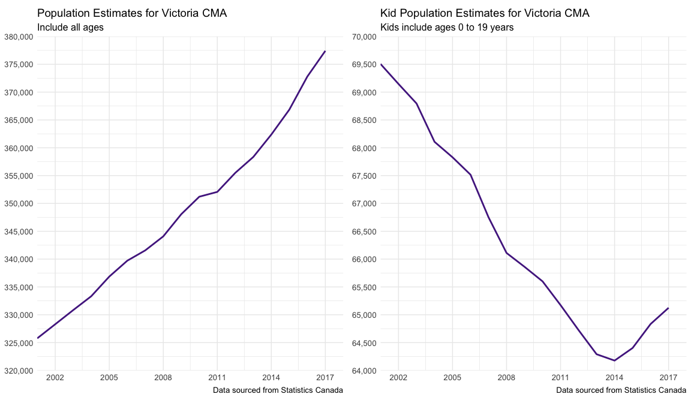
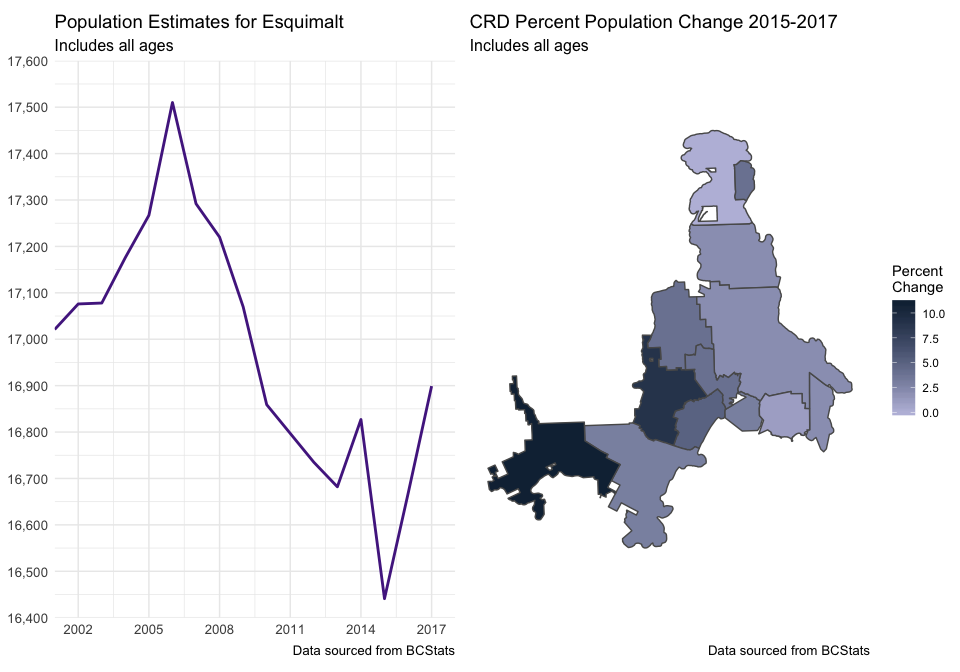
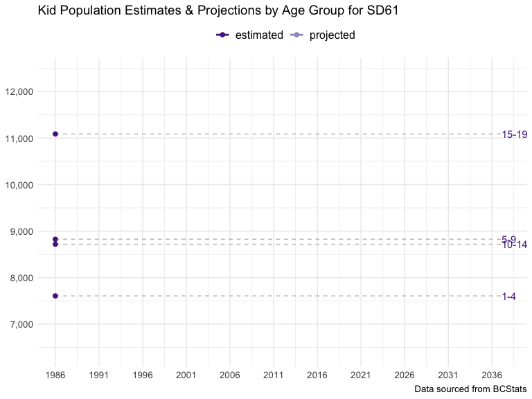
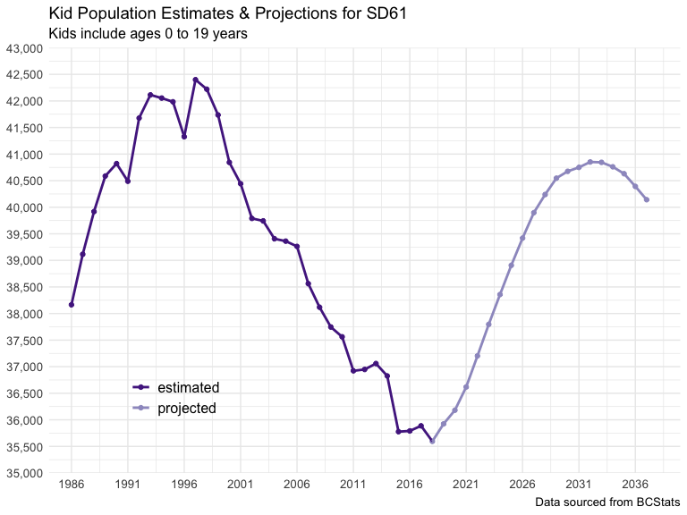

Explorating patterns of student population change in Greater Victoria, B.C.
May 2, 2018
We are in the campaign period for the British Columbia 2018 General Local Elections. I live in the Township of Esquimalt 🏙—an amazing community. However, there is always room to improve, even on amazing. I have enjoyed talking with our local government candidates, in particular about what issues motivated them to campaign to step into such important roles—the housing crisis, responsible development, community building. In turn, I have had a fair bit to say about issues on my mind, such as climate change (this 😱), reducing speed limits in neighbourhood areas 🚗, more and safer bike paths for family cycling 🚲, and, schools. Specifically, space in our only catchment elementary school—L’Ecole Macaulay Elementary.
Esquimalt used to have 2 catchment elementary schools, Lampson Street & Macaulay (Ecole Victor-Brodeur is also in Esquimalt, a school that serves the francophone community). Lampson, a school building with an impressive history in the region, was closed as a catchment elementary school in 2007 due to declining enrolment.
However, things have and are changing—and pretty fast.
Due to the recent, legal change to revert class size & composition back to 2002 levels, as well as a growing population—Macaulay has added one or more new classes in each of the 3 years I have had kids in the school, as have many elementary schools throughout the Capital Regional District. Macaulay has over 470 kids enrolled this year, so I have been talking 🗣 to candidates about how Macaulay is pretty full—and I think we need a plan for the kids that are still to come.
I thought it would be interesting to support this discussion with some data. Also, I am always keen to work on my R skills 👩💻. So here it goes.
Let’s start by pulling some population estimate data from Statistics Canada—I found data for each Census Metropolitan Area by age group. Perfect. I had to Google to learn about what the Victoria Census Metropolitan Area (CMA) actually includes, turns out it includes all of the Capital Regional District minus the Gulf Islands. Let’s have a look 👀:
## Data: Victoria Census Metropolitan Census Area (British Columbia) Population
## Estimates [Table: 17-10-0078-01 (formerly CANSIM 051-0056) from Statistics Canada
#get Statistics Canada data using cansim package
bc_popn <- get_cansim(1710007801) %>%
filter(GEO == "Victoria, British Columbia",
Sex == "Both sexes") %>%
select(year = REF_DATE, age_group = `Age group`, population_estimate = VALUE) %>%
mutate(year = as.integer(year))
#make plot of Victoria CMA population estimates
cma_plot <- bc_popn %>%
filter(age_group == "All ages") %>%
ggplot(aes(x = year, y = population_estimate, group = 1)) +
geom_line(size = 1, colour = "#54278f") +
scale_x_continuous(limits = c(2001, 2018),
breaks = seq(2002, 2017, 3),
expand = c(0,0)) +
scale_y_continuous(limits = c(320000, 380000),
breaks = seq(320000, 380000, 5000),
expand = c(0,0), labels = comma) +
labs(title = "Population Estimates for Victoria CMA",
subtitle = "Include all ages",
caption = "Data sourced from Statistics Canada") +
theme_minimal() +
theme_plots
#kid age groups
kid_ages <- c("0 to 4 years", "5 to 9 years", "10 to 14 years", "15 to 19 years")
#make plot of kid Victoria CMA population estimates
cma_kids_plot <- bc_popn %>%
filter(age_group %in% kid_ages) %>%
group_by(year) %>%
summarise(population_estimate = sum(population_estimate)) %>%
ggplot(aes(x = year, y = population_estimate, group = 1)) +
geom_line(size = 1, colour = "#54278f") +
scale_x_continuous(limits = c(2001, 2018),
breaks = seq(2002, 2017, 3),
expand = c(0,0)) +
scale_y_continuous(limits = c(64000, 70000),
breaks = seq(64000, 70000, 500),
expand = c(0,0), labels = comma) +
labs(title = "Kid Population Estimates for Victoria CMA",
subtitle = "Kids include ages 0 to 19 years",
caption = "Data sourced from Statistics Canada") +
theme_minimal() +
theme_plots#plot the Victoria CMA plots
cma_plot + cma_kids_plot
The Statistics Canada data confirms what we hear all the time, the population in the Victoria CMA has been steadily increasing since 2001. But not due to more kids—the population of 0 to 19 year olds steadily declined from 2001 until 2014. This explains the decline in enrolment—and School District decisions to close schools at that time. However, 2014 brings a clear change—kid numbers start increasing. But what about in the Township of Esquimalt?
I found some population data for Municipalities from BCStats, but unfortunately not by age group 😞.
## Data: Esquimalt District Municipality population estimates from
## BCStats Population Estimates webpage
#municipalities I want
crd <- c("Central Saanich", "Colwood", "Esquimalt", "Highlands",
"Langford", "Metchosin", "North Saanich", "Oak Bay", "Saanich",
"Sidney", "Sooke", "Victoria", "View Royal")
#get the 2001-2011 CRD population estimate data file
bcstats_mun_2001_2011 <-
"http://www.bcstats.gov.bc.ca/Files/0379a32f-cec8-438d-83e0-6724b2a2a272/BCDevelopmentRegionRegionalDistrictandMuncipalPopulationEstimates2001-2011.xls"
get_mun_2001_2011 <- curl_download(bcstats_mun_2001_2011,
destfile = glue(path, "/bcstats_mun_2001_2011.xls"))
crd_2001_2011 <- read_xls(get_mun_2001_2011, skip = 3) %>%
filter(Name %in% crd) %>%
select(-`2011`, -Type, -SGC)
# get 2011-2017 CRD population estimate data file and merge data with the 2001-2011 data
bcstats_mun_2011_2017 <-
"http://www.bcstats.gov.bc.ca/Files/285cd56c-9be1-4c5e-a153-3deeffa2ac94/BCDevelopmentRegionRegionalDistrictandMuncipalPopulationEstimates2011-2015.xls"
get_mun_2011_2017 <- curl_download(bcstats_mun_2011_2017,
destfile = glue(path, "/bcstats_mun_2011_2017.xls"))
crd_2001_2017 <- read_xls(get_mun_2011_2017, range = ("A3:J48")) %>%
filter(Name %in% crd) %>%
bind_cols(crd_2001_2011) %>%
select(-`2011`, -`Area Type`, -SGC, -Name1) %>%
gather(key = year, value = population_estimate, -Name) %>%
mutate(population_estimate = as.numeric(population_estimate),
year = as.integer(year)) %>%
arrange(year)
#plot of Township of Esquimalt population estimates
esquimalt_plot <- crd_2001_2017 %>%
filter(Name == "Esquimalt") %>%
ggplot(aes(x = year, y = population_estimate, group = 1)) +
geom_line(size = 1, colour = "#54278f") +
labs(title = "Population Estimates for Esquimalt",
subtitle = "Includes all ages",
caption = "Data sourced from BCStats") +
scale_x_continuous(limits = c(2001, 2018),
breaks = seq(2002, 2017, 3),
expand = c(0,0)) +
scale_y_continuous(limits = c(16400, 17600),
breaks = seq(16400, 17600, 100),
expand = c(0,0), labels = comma) +
theme_minimal() +
theme_plots
#calculate municipality population change for 2015 to 2017
crd_change <- crd_2001_2017 %>%
filter(year %in% c(2015, 2017)) %>%
group_by(Name) %>%
mutate(popchange = population_estimate-lag(population_estimate)) %>%
mutate(percchange = round((popchange/lag(population_estimate) * 100), digits = 0)) %>%
filter(year == 2017) %>%
select(-year)
#map 2 year % population change for municipalities
crd_change_spatial <- municipalities() %>%
filter(ADMIN_AREA_ABBREVIATION %in% crd) %>%
mutate(Name = ADMIN_AREA_ABBREVIATION) %>%
left_join(crd_change) %>%
ggplot() +
geom_sf(aes(fill = percchange)) +
coord_sf(datum = NA) +
labs(title = "CRD Percent Population Change 2015-2017",
subtitle = "Includes all ages",
caption = "Data sourced from BCStats") +
scale_fill_gradient(name = "Percent\nChange", low = "#bcbddc", high = "#132B43") +
theme_minimal() +
theme_plots#plot the Esquimalt plots
esquimalt_plot + crd_change_spatial
The Township of Esquimalt population has been a bit more variable since 2001, with a declining pattern from 2006 to 2013. However, there has been an uptick in recent years. In fact, all the Greater Victoria municipalities—except North Saanich—had a measurable increase in popuation over the last 2 years—Victoria a 1% increase, Esquimalt 3% and Sooke 11%! Wow, that is a lot.
What I really want to know is how the population of kids is changing in Esquimalt. I was not able to find population-by-age data for Esquimalt, but I did find it for the Greater Victoria School Districts.
## Data: School District 61 Population Estimates & Projections from BCStats manual
## online tool: https://www.bcstats.gov.bc.ca/apps/PopulationProjections.aspx
#get SD61 population estimates & projections
sd61_kids <- read_csv(glue(path, "/Population_Projections.csv")) %>%
select(Year, "<1", "1-4", "5-9", "10-14", "15-19") %>%
gather(key = age_group, value = population_estimate, -Year) %>%
filter(Year < 2038) %>%
mutate(age_group = factor(age_group, ordered = TRUE,
levels = c("<1", "1-4", "5-9", "10-14", "15-19")),
data_type = case_when(Year < 2018 ~ "estimated",
TRUE ~ "projected"))
#plot of kid population estimates in SD61 by age group
sd61_kids_line_plot <- sd61_kids %>%
filter(age_group != "<1") %>%
ggplot(aes(Year, population_estimate, group = age_group, colour = data_type)) +
geom_line(size = 1) +
geom_segment(aes(xend = 2037 , yend = population_estimate), linetype = 2, colour = 'grey') +
geom_point(size = 2) +
geom_text(aes(x = 2037.1 , label = age_group), hjust = 0, colour = "#54278f") +
coord_cartesian(clip = 'off') +
labs(title = "Kid Population Estimates & Projections by Age Group for SD61",
# subtitle = "Kids include ages 1 to 19 years",
caption = "Data sourced from BCStats") +
theme(plot.margin = margin(5.5, 0, 5.5, 5.5)) +
scale_x_continuous(limits = c(1984, 2040), breaks = seq(1986, 2038, 5), expand = c(0,0)) +
scale_y_continuous(breaks = seq(6000, 13000, 1000), expand = c(0,0), labels = comma) +
scale_colour_manual(name = "", values = c("#54278f", "#9e9ac8")) +
scale_fill_manual(name = "", values = c("#54278f", "#9e9ac8")) +
theme_minimal() +
theme_plots +
theme(legend.position = "top",
legend.text = element_text(size = 12))
#plot of total sd61 kid population estimates
sd61_kids_total_plot <- sd61_kids %>%
group_by(Year, data_type) %>%
summarise(population_estimate = sum(population_estimate)) %>%
ggplot(aes(x = Year, y = population_estimate, colour = data_type, group = 1)) +
geom_point() +
geom_line(size = 1) +
labs(title = "Kid Population Estimates & Projections for SD61",
subtitle = "Kids include ages 0 to 19 years",
caption = "Data sourced from BCStats") +
scale_x_continuous(limits = c(1984, 2040), breaks = seq(1986, 2038, 5), expand = c(0,0)) +
scale_y_continuous(limits = c(35000, 43000), breaks = seq(35000, 43000, 500), expand = c(0,0), labels = comma) +
scale_colour_manual(name = "", values = c("#54278f", "#9e9ac8")) +
theme_minimal() +
theme_plots +
theme(legend.position = c(.2,.2),
legend.text = element_text(size = 12)) #animate the sd61 age group plot
sd61_kids_line_plot +
transition_reveal(age_group, Year)
#plot the sd61 total line plot
sd61_kids_total_plot
The School District 61 data shows a similar pattern to what we have already observed— population declines for all kid age groups through the 2000s. We see the recent increases, and the projected increases to come—for at least the next 15 years! I confess that while the animated plot is fun to make 🤓, rolling the kid age group populations together and keeping things still really tells the story:

Our Esquimalt catchment elementary school is full and the kid population estimate lines are going up—and predicted to do so for at least the next 15 years 📈. In my opinion, a plan for the kids that are still to come should be on the to-do list 📜 for the Township of Esquimalt. The elementary school space crunch has already had community impacts throughout the Capital Regional District, displacing dedicated computer labs, after-school care situations, pre-schools. The School District recently launched a Catchment Boundary Review & Public Consultation—a great step in supporting planning. However, with only one catchment school and one boundary, I think it is also time to talk about bringing a second catchment elementary school (back) on line for Esquimalt kids 🏫.
This post was originally published through GitHub.
If you see mistakes or want to suggest changes, please create an issue on the source repository.
Text and figures are licensed under Creative Commons Attribution CC BY-SA 4.0. Source code is available at https://github.com/stephhazlitt/stephhazlitt-distill, unless otherwise noted. The figures that have been reused from other sources don't fall under this license and can be recognized by a note in their caption: "Figure from ...".